Oct 2024 to now · Web app · Ongoing
Building Wildlife Illustrated
A home for the drawings, nine stretches in
I am drawing every bird recorded in the Maldives, and the drawings needed somewhere to live. I built a page for them, and I keep coming back to it: every few months, for a few weeks, usually to learn one new thing. Its changelog records nine stretches of work so far. This page follows them in order.
- Started
- October 2024
- Now on
- Version 0.9
- Drawn so far
- 18 of 276 species
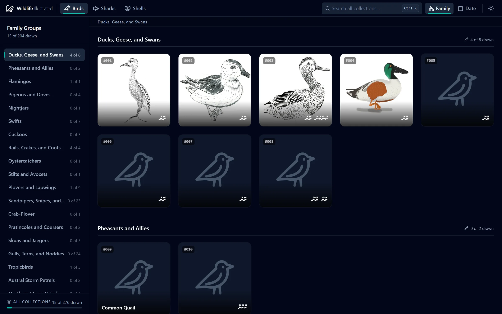
A page for two ducks
The list is long: 204 birds. A folder of image files does not show how far along I am, which family I have been avoiding, or what each bird is called in Dhivehi. I wanted the whole list on one page, with a grey shape for every species I had not drawn yet, so the gaps were as visible as the drawings.
The first version was a plain page written by hand. It went up on 10 October 2024 with the Lesser Whistling-Duck on it, and the Cotton Pygmy-Goose followed five days later.
Making it publish itself
I came back with a third drawing, the Garganey, and spent the next few weeks on everything around the page: a workflow so that a push publishes the site, a local build that worked, a favicon and a title card.
- Stopped tracking
node_modules. - Set up a GitHub Actions workflow to deploy on every push.
- Ended with a refactor of the whole script, the first of many.
Build tools
A week later I moved the project to Deno and esbuild. Nothing a visitor could see changed. I wrote my first tests here, for the build's handler and bundler, and added a licence.
A thread that returns These tests did not survive the next rewrite. The site then went without any until version 0.9, seventeen months later.
Starting over in Vue
In May I rewrote the site from scratch in Vue. This is the oldest code still in the repository, and the first version I can rebuild and show.
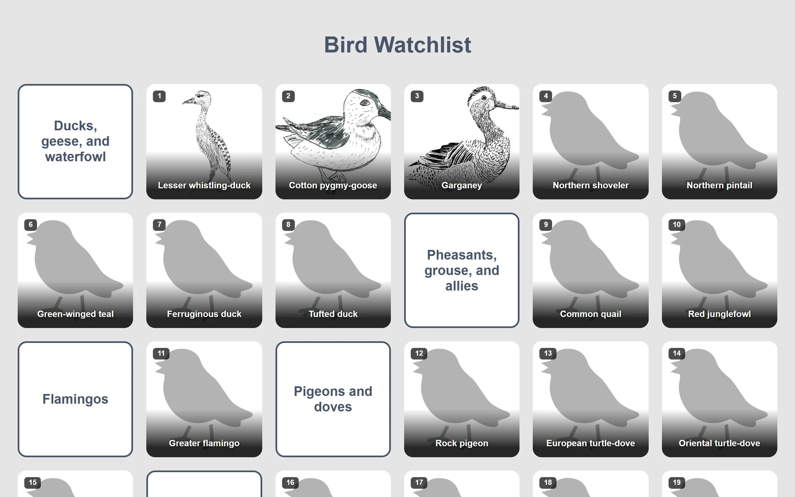
This is the stretch with the most drawing in it. In October I added six birds in one day, and thumbnails four days later. By December there were fourteen drawings, the list had moved from a text file to JSON, and the site counted how many were done.
- Converted the drawings from PNG to WebP, then added separate thumbnails.
- Two shells drawn in July, long before there was a shells collection.
- Fixed scrolling twice, once for phones.
Tailwind and the dark
A drawing of the Northern Shoveler in December, and then a restyle in January: I moved the styles to Tailwind, added a dark theme with a toggle, a sidebar of families and a footer.
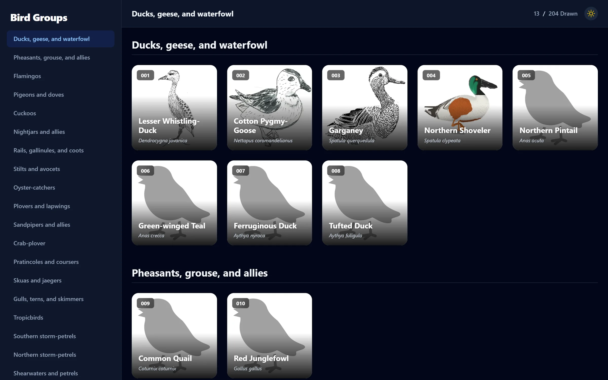
- Added git hooks. They are gone now; CI does that job.
Finding things
Straight on from the restyle, the site started to do more than show a grid. A drawing opens full-size with a panel beside it; there is a search bar; drawings can be sorted by the date they were made. Each one gained a note from me and, in February, its Dhivehi name.
- Rewrote the build, and made the script that ships a drawing skip images already converted.
- Added a three-way check that the drawing count is right.
- Wrote down the known issues for the first time.
A thread that returns "Fixed versioning system" is in this changelog. It was replaced in 0.8 and simplified in 0.9. Search, added here, was reworked in 0.8 and again in 0.9.
More than birds
The project outgrew its name. I wrote a plan for more than one collection, restructured the site so a collection is data and not code, and three days after the first working version added sharks and shells on the same day. The Sand Dollar was drawn that day too.
{
"id": "birds",
"label": "Birds",
"groupLabel": "Family",
"itemLabel": "bird",
"links": [ { "label": "eBird", "url": "…?q={{common}}+ebird" } ]
}
- A new collection is one entry like this (shortened, as it is today), a list of species and a folder of images.
- Moved every type into its own folder and cut the main component down.
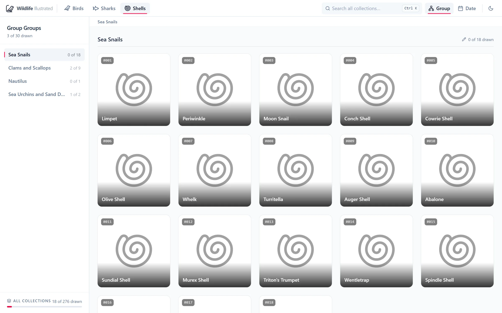
Doing it properly
No new drawings in this stretch or the next. I came back to the code itself: search across every collection with keyboard navigation, a build pipeline in separate steps, and a pass over the interface so its parts matched.
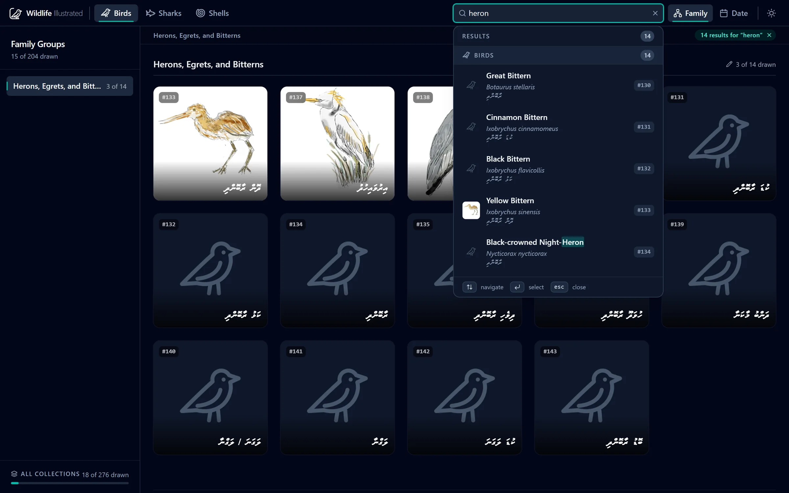
- A performance pass: lazy images, debounced search, the full-size viewer loaded only when opened.
- Lighthouse accessibility and SEO both to 100.
- Lint, format and build on every pull request; the unused deploy branch removed.
The version number, worked out
The footer today reads something like v0.9.161 · 18 drawings · 4f0f400.
Since this version only the first two numbers are written down anywhere. The patch is the
number of commits, the drawing count is read from the lists, and the last part is
the commit it was built from. It cannot drift, because there is nothing to forget
to update.
Safe to change
The longest stretch so far, in three bursts. In July the state moved out of one shared object into four stores, every drawing got its own address, and the first 44 tests were written. In September the tests grew and found real bugs. In October the site got a design system, its own icons and a logo.
- 44 → 166
- tests from July to early October, with 41 more since
- 47.8 → 93.0%
- of lines covered; the build fails below 88%
- 4
- time zones the tests run in
What the tests found
- A drawing dated the 1st of a month showed under the previous month for anyone west of UTC. That is why the tests run in four time zones.
- A slow collection could finish loading after you had switched away, and show its items under the wrong heading.
- If the list of collections failed to load, the spinner turned forever.
- Searching for "amp" could cut an "&" in half and break the highlighted name.
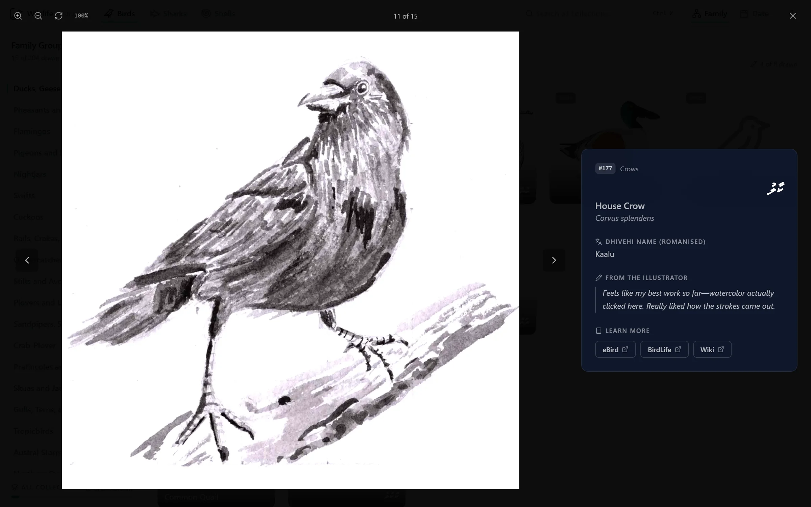
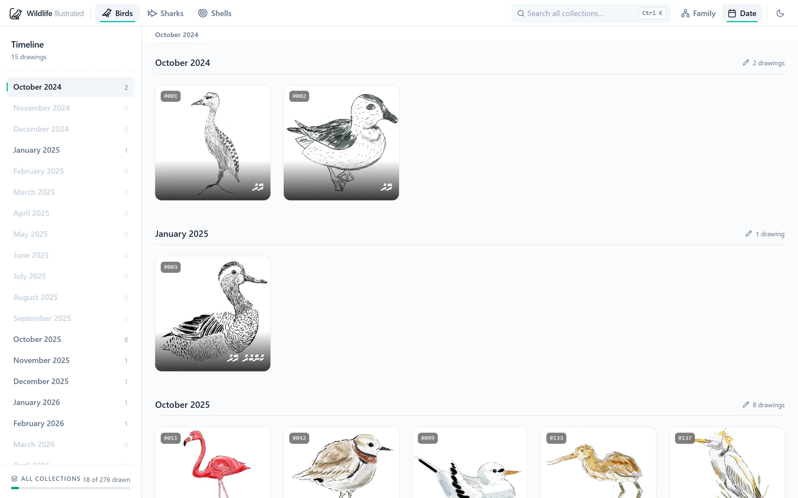
How it is put together now
raw_png/ (the drawings, not in git)
│
▼
1. Asset pipeline scan → plan → execute → report
▼
public/ collections.json · lists/birds.json · full/ · thumb/
│ the contract: fetched at runtime, never imported
▼
2. The site types ← helpers ← composables ← stores ← components
3. Tests and CI the same checks on every pull request and every deploy
A look, written down
For most of its life the site looked like whatever I had last changed. In October I wrote the look down: one neutral ramp, one accent per collection from twelve contrast-checked hues, six text sizes, two corner radii, and line icons in place of emoji. The guide is drawn by a script from the real colours and icons, an idea I then used for this portfolio's guide.
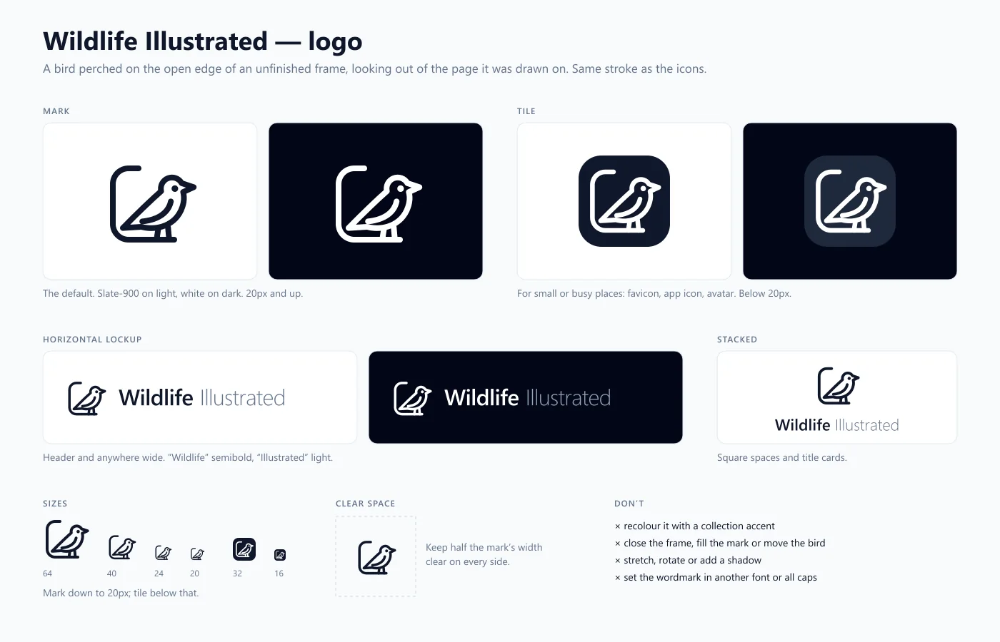
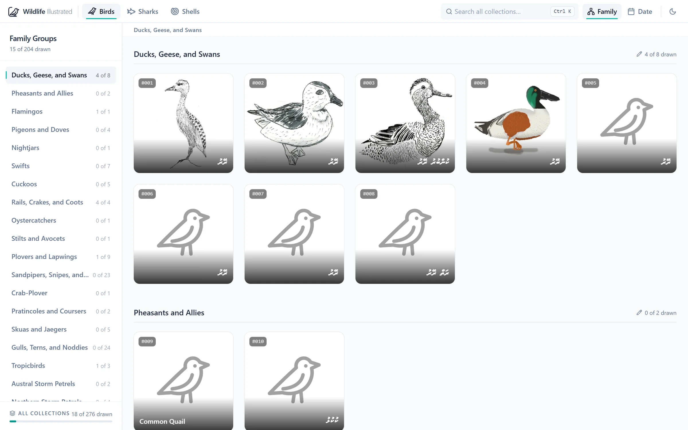
On a phone
The phone layout got its own pass: search on its own row, two columns, names always visible because there is no hover, and pinch, pan and swipe in the full-size view.
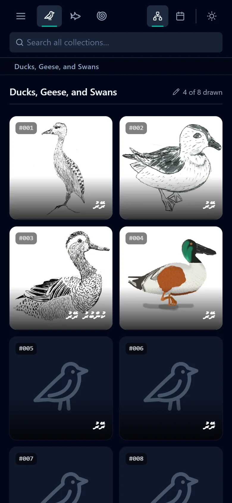
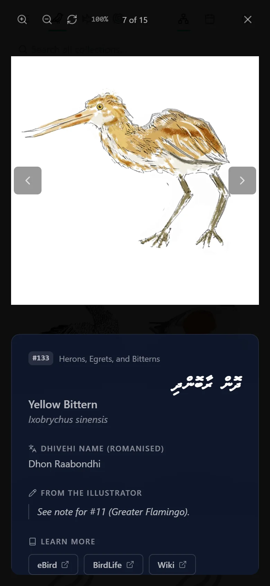
Still open
A lot of it was over-engineered and rewritten for the sake of it, and that is exactly how I learned web development.
The site is now far ahead of the project it serves: two stretches of code since the last drawing. The next time I come back, it should be with drawings.
On the list
- Conservation status for each species.
- Seasonality: which monsoon each bird is seen in.
- More than one drawing per species.
- Tests for the components themselves, which are still checked by hand.